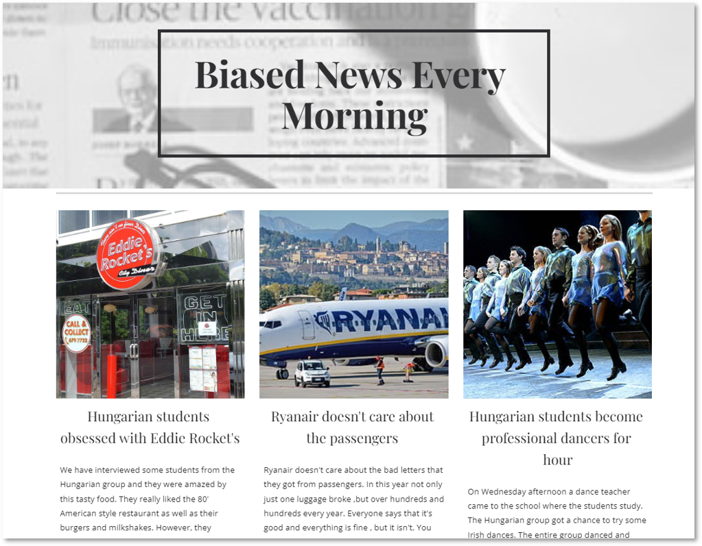
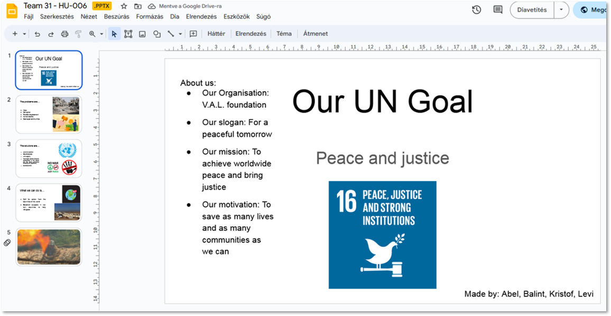

Írország - projektek
Mindkettő projektünk úgy épült fel, hogy az 5 napból az első hármon olyan feladatokat csináltunk, amivel fejlesztettünk valamilyen képességünket, de közben a projekthez is hozzájárult. Az utolsó 1-2 nap pedig megcsináltuk a projekteket és előadtuk őket. A projekteket mindig 3-4 fős csapatokban készítettük el.
Mindkettő projektünk úgy épült fel, hogy az 5 napból az első hármon olyan feladatokat csináltunk, amivel fejlesztettünk valamilyen képességünket, de közben a projekthez is hozzájárult. Az utolsó 1-2 nap pedig megcsináltuk a projekteket és előadtuk őket. A projekteket mindig 3-4 fős csapatokban készítettük el.
Mini-projektek
Mini-projekt alatt azt kell érteni, hogy mondjuk az egyik órán kellet összeállítani. Többször párokba álltunk és úgy vitattunk meg dolgokat, vagy mondjuk 2-3 fős kiscsoportokban kellet összeállítani kis anyagokat. Olyan dolgokat csináltunk, amiket utána a nagy projekthez is felhasználhattunk.
Szerdánként az iskola épületének az alaksorába összegyűltek az ottani éppen angol képzésben résztvevő, akár más kontinensekről érkező diákok és vegyes csoportokat alakítottunk ki. A csoportban beszéltünk rengeteg minderről, hogy kicsit összeismerkedjünk. Utána a társaságot 4 felé osztották és egy adott témával kapcsolatban 2-2 csapat pro és kontra érvekkel kellett felkészülnie, majd utána 1-1 csapat összecsapott egymással, ami után szavazással eldöntöttük, hogy melyik csapat nyerte meg a vitát.
Témák
1. hét – Fake news (Hamis hírek)
Úgy épült fel az egész projekt, hogy az elején bemelegítés képpen a témával kapcsolatos szavakat ismertünk meg és azokkal játszottunk külön féle játékokat. Utána már nagyobb szókincsünk volt a témát illetően, ezért így már képesek voltunk feladatokat megoldani. Aztán abból kiindulva kezdtük el megcsinálni a csapatonkénti önálló cikkeinket, aminek végül a késztermékét mutattuk be. A bemutatást az utolsó nap második felében bonyolítottuk le.
2. hét – Sustainability (Fenttarthatóság)
Kezdetben kaptunk címszavakat a fenttarthatósággal kapcsolatban, amikből csapatonként 3-3 ki kellett választani, hogy szerintünk melyik 3 a legfontosabb dolog és miért az. Azután ezekből ki kellett választani a csapatoknak, hogy melyik a legfontosabb számukra. Ez lett a fő projektnek a címe, amihez kis háttér anyagokat kellett gyűjteni, amit utána felhasználtunk az alkotáshoz.
Ennek a projektnek a végterméke egy videó lett, amit aznap a bemutató előtti napon vettünk fel és szerkesztettünk meg. Lett olyan videó ahol szerepeltünk benne és lett olyan is ahol csak képek voltak benne és alá mondták a szöveget.